VEREDICTO: GANA EL ISOMÉTRICO 278/278 tests ~30 agentes · 11 rondas de crítica ciega
El juego se ha convertido de vista cenital a proyección isométrica manteniendo toda la lógica
cartesiana intacta (proyección a nivel de cámara: rotación 45° + compresión vertical; entidades verticales
por contra-transformación «billboard»). El trabajo se dividió en piezas juzgables por separado; cada pieza
la construyó un agente builder y la juzgó un crítico ciego con contexto fresco que ejecutaba el
juego real (harness tools/screenshot_runner.tscn, semilla fija) y comparaba capturas etiquetadas
A/B sin saber cuál era cuál, con el lenguaje visual de los RTS isométricos clásicos como listón. Si la nueva
versión perdía, el crítico nombraba el mayor hueco y el builder volvía a entrar. Todo el arte es
procedural y original del proyecto.
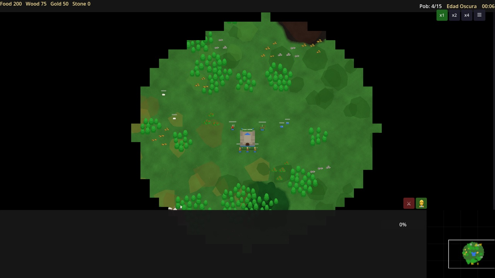
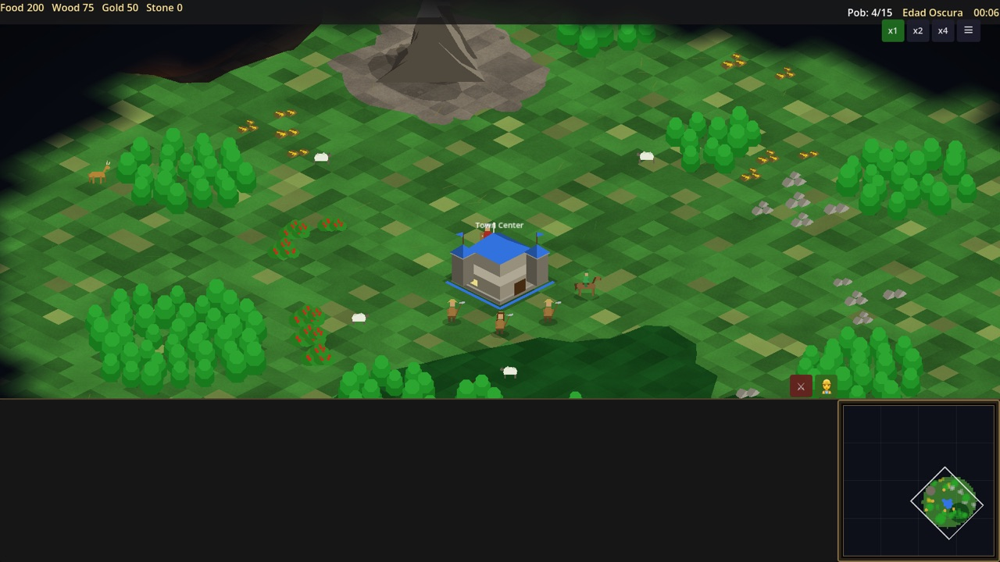
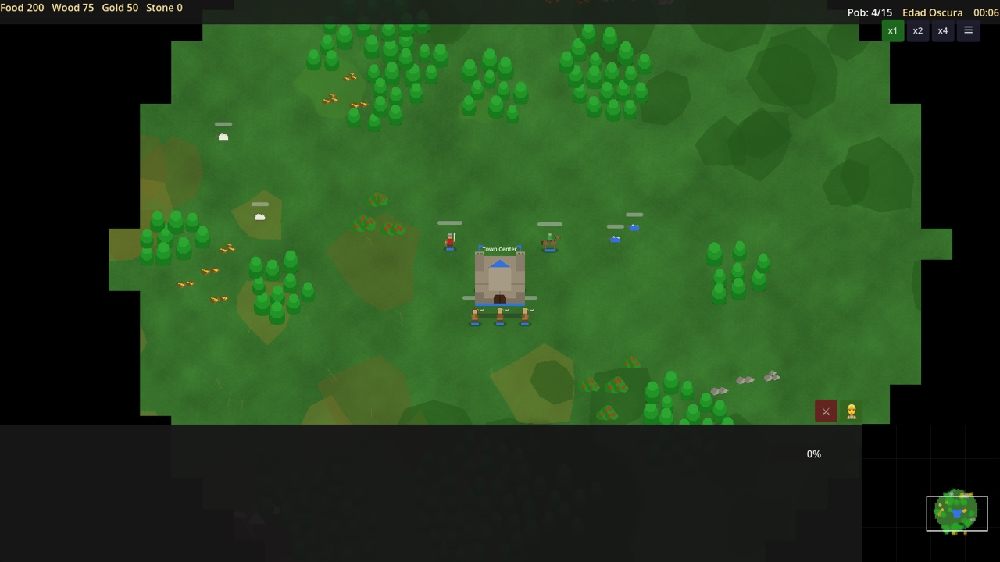
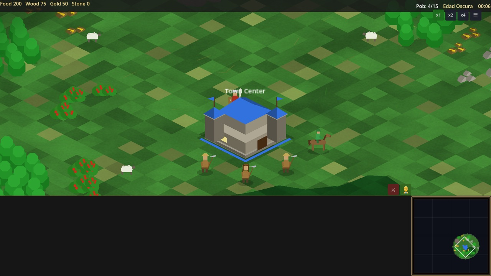
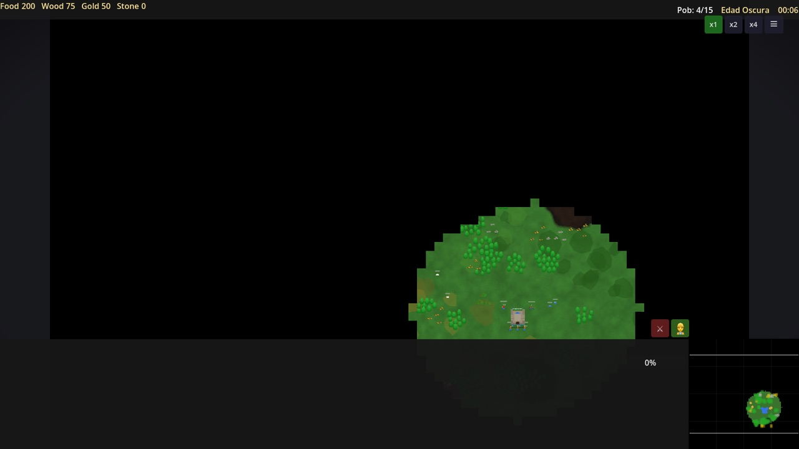
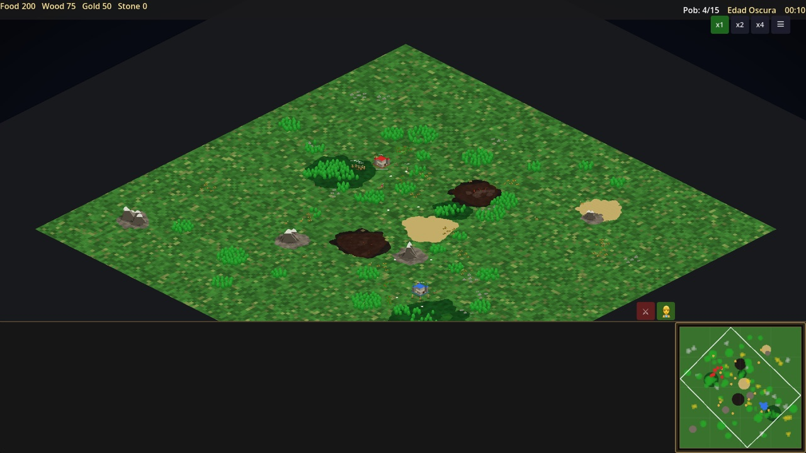
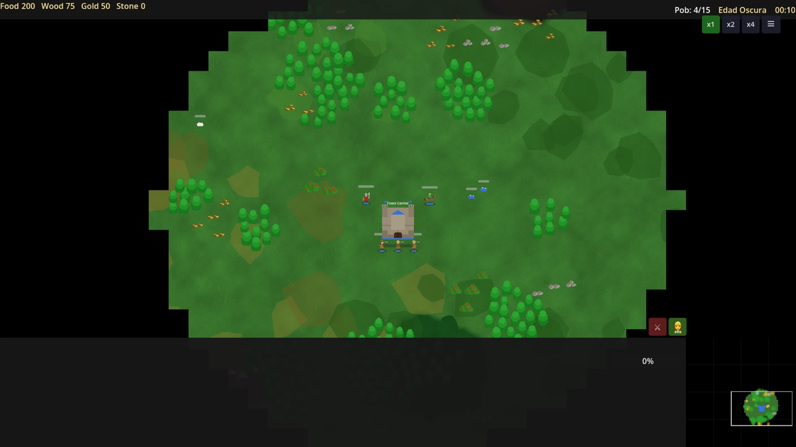
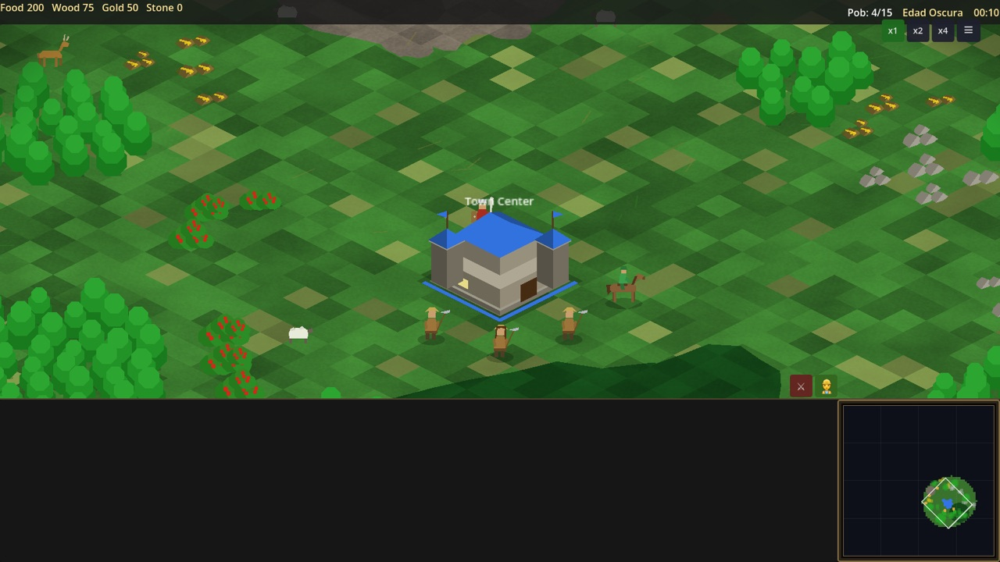
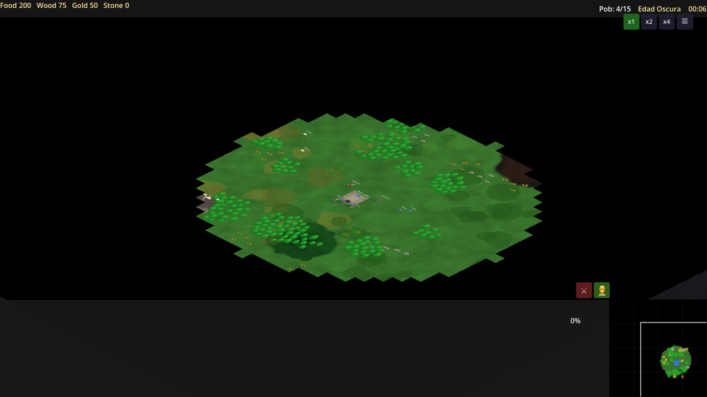
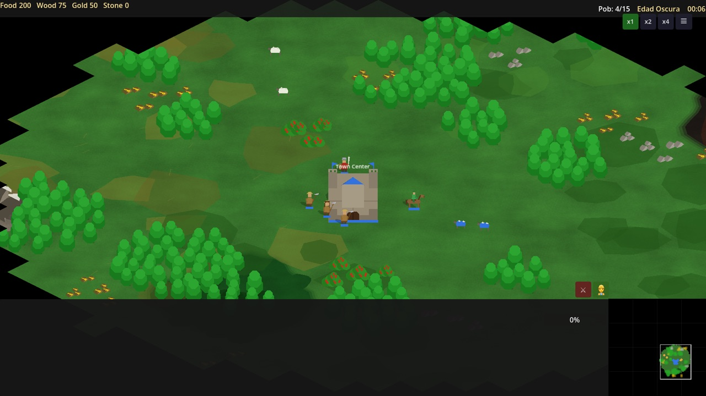
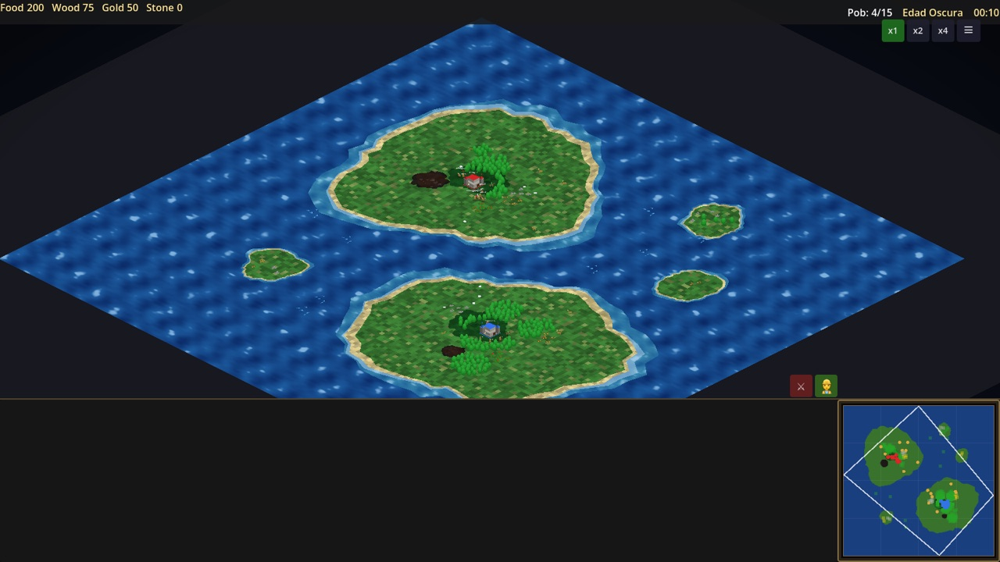
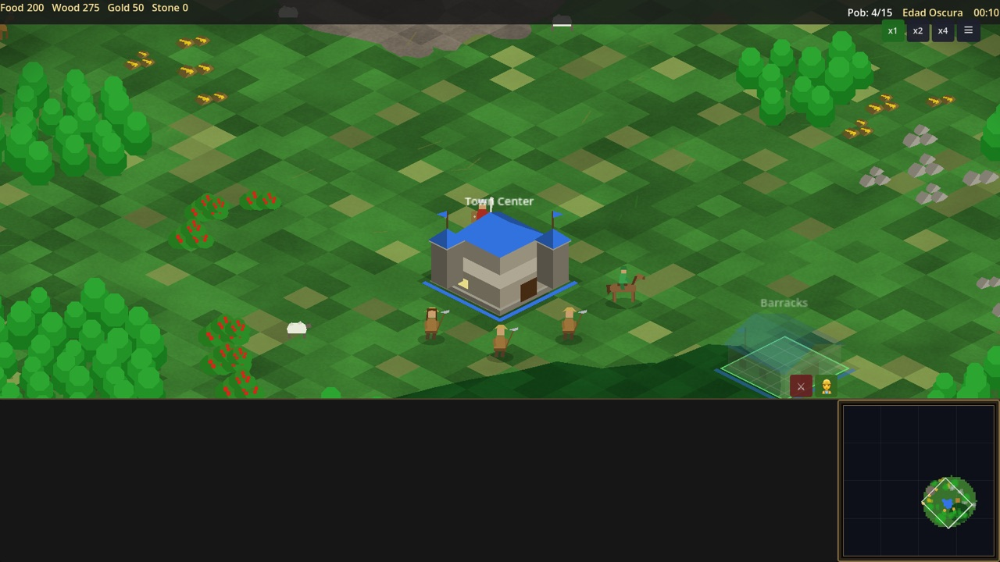
CALIMA_PREVIEW=1 del harness).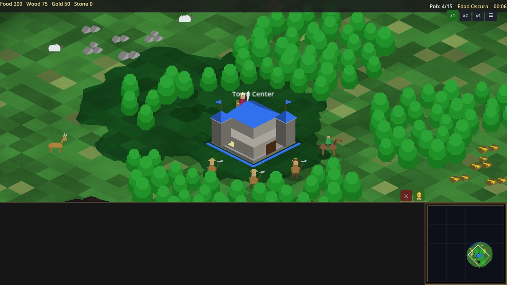
«El set A muestra una escena genuinamente isométrica — TC volumétrico con tejado, torres y banderas; figuras ancladas con herramientas; explorador montado; ciervos y ovejas; frontera de niebla con gradiente suave que funde en un único color de vacío. El otro set es un prototipo plano: un TC de cartón de frente, unidades-pegote diminutas, bordes de niebla en bloques. […] A es, sin ambigüedad, la build que elegiría un jugador de RTS de la era clásica; sus huecos restantes son mobiliario de HUD y pulido de textura, no estructura.» — Crítico ciego de confirmación (contexto fresco, sin acceso a resúmenes ni historial), 26-08-2026. Veredicto idéntico al del primer crítico de experiencia completa.
| Fase | Rondas | Resultado | Hueco que nombró el crítico al cerrar |
|---|---|---|---|
| P0 Proyección de cámara | 3 | ✅ (perdió 2 antes de ganar) | Edificios como fachadas planas → P2 |
| S1 Alisador (3 mapas) | 1 | ✅ 5 incoherencias arregladas | Sombras, ovejas azules, rect. de cámara, mástil rally, «0%» |
| P1 Unidades | 1 | ✅ | Elipse de selección siempre visible («ovejas en charcos») |
| P2 Edificios volumétricos | 1 | ✅ | TC sin anclaje al suelo; franja drop-off atraviesa muro |
| P3 Terreno | 1 | ✅ | Hierba plana, «manchas de aceituna» |
| P4 HUD/minimapa | 2 | ✅ (1ª ronda: empate) | Contenido del minimapa sin llenar su panel |
| Merge P1–P4 | — | ✅ 1 conflicto (página de progreso) | — |
| S2b Alisador final | 1 | ✅ 8 huecos cerrados (1 parcial) | — |
| Final Crítico de confirmación | 2× | ✅ GANA el isométrico | HUD inferior vacío (mobiliario de UI) |
feature/isometric, 37+ commits por delante de main, sin mergear
ni pushear; ramas de pieza iso/p1..p4 conservadas. Registro completo de rondas en
docs/analysis/iso-progress.md. Reproducción de capturas:
CALIMA_SHOT_DIR=… CALIMA_SEED=42 [CALIMA_MAP=4|CALIMA_PREVIEW=1] godot --path project --resolution 1600x900 res://tools/screenshot_runner.tscn.
Nota: el rewrite del terreno cambió el consumo del RNG — la semilla 42 genera hoy un layout distinto (igual de válido) al de las primeras rondas.